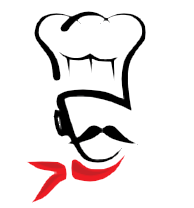

<mt-header>
</mt-header>

<!-- Full Width Column -->
<div class="wrapper1">
  <div class="container">

    <router-outlet></router-outlet>

  </div>
</div>

<mt-snackbar></mt-snackbar>

<div class="footer">

  <div class="logoFooter">
    
  </div>

  <footer class="main-footer" style="background-color: rgba(48, 18, 18, 0.9)">
    <div class="container" style="color: white">
      <div class="pull-right hidden-xs">
        <b>Version</b> 0.2.7
      </div>
      <strong>Lá Quinta Pizzaria</strong> - Projeto Uninove
    </div>
  </footer>
</div>